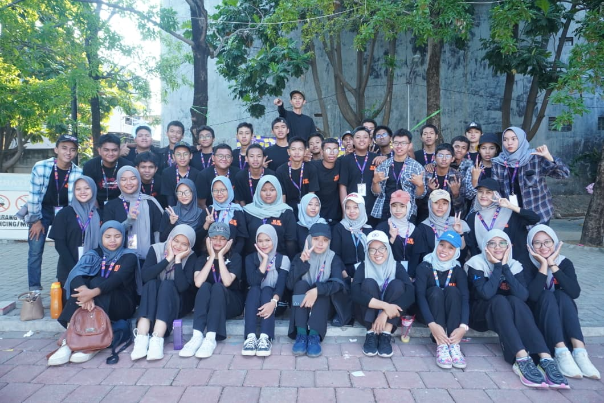
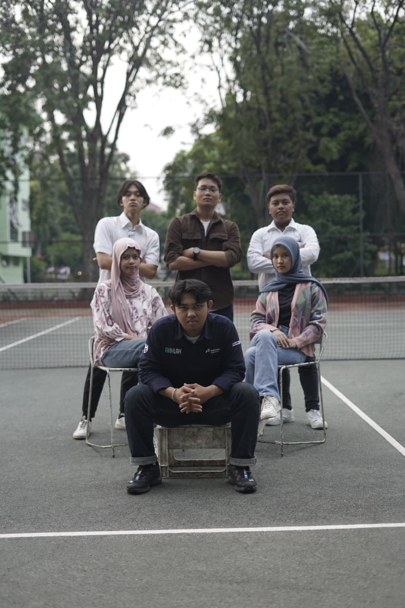
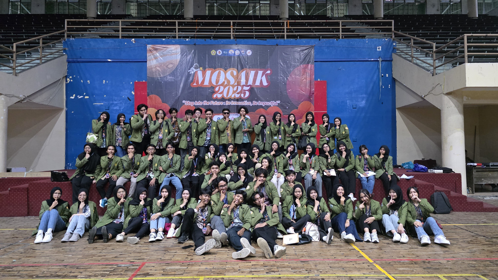
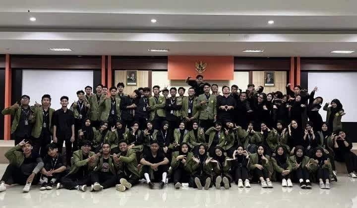
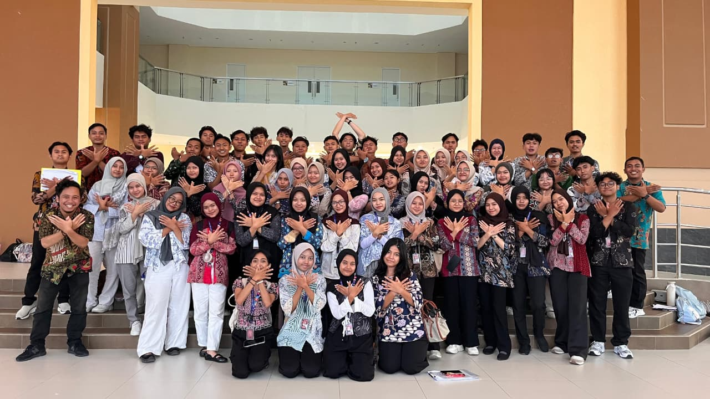
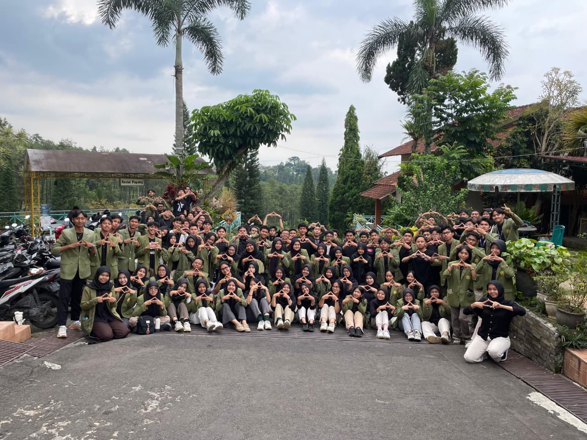
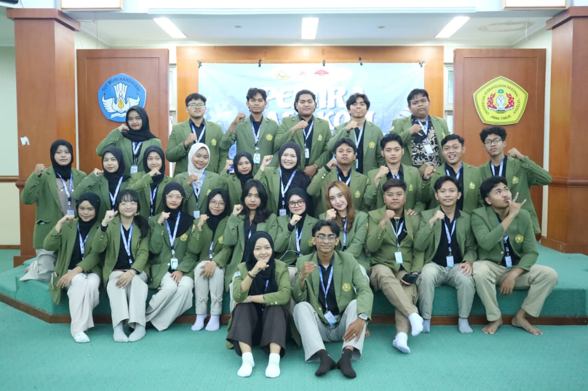
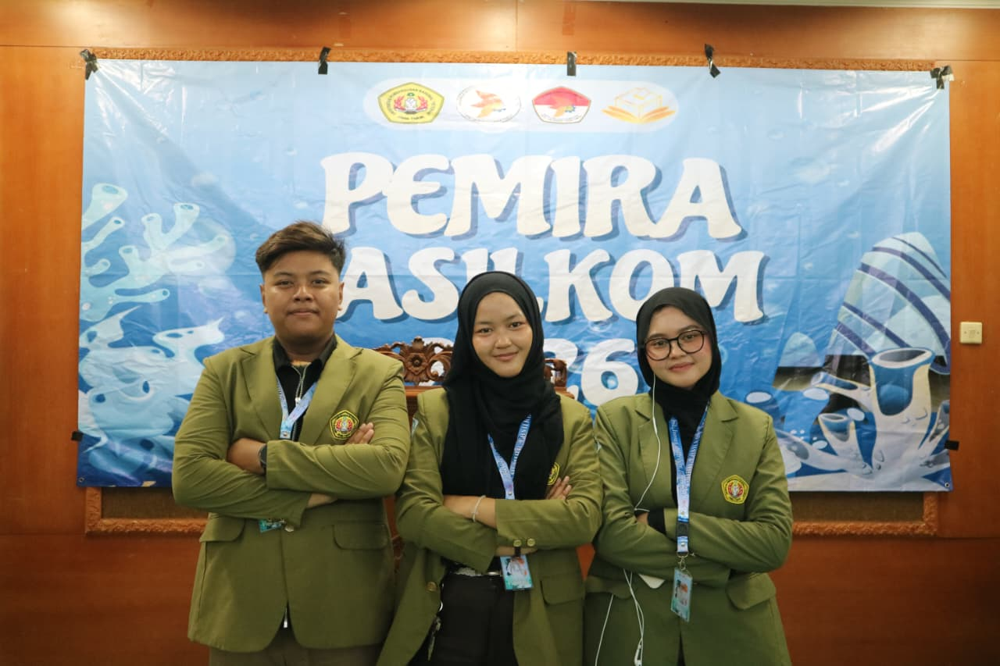

Pengalaman
Okt 2024
PANITIA FUNTASTECH 2024 – UPNVJT, Surabaya
Anggota Panitia Perlengkapan dan Konsumsi
- Bertanggung jawab dalam pengadaan dan distribusi perlengkapan serta konsumsi selama kegiatan berlangsung
- Memastikan ketersediaan logistik sesuai kebutuhan acara secara tepat waktu
- Berkoordinasi dengan tim untuk mendukung kelancaran operasional kegiatan

Des 2025

PANITIA PEMIRA SISTEM INFORMASI 2025 – UPNVJT, Surabaya
Anggota Panitia Perlengkapan dan Konsumsi
- Mengelola kebutuhan perlengkapan dan konsumsi untuk mendukung jalannya kegiatan pemira
- Melakukan koordinasi dengan divisi lain untuk memastikan kesiapan logistik
- Membantu memastikan kelancaran pelaksanaan acara melalui dukungan operasional
Jul 2025

PANITIA DIES NATALIS SISTEM INFORMASI 2025 – UPNVJT, Surabaya
Anggota Panitia Perlengkapan dan Konsumsi
- Menyiapkan dan mengelola perlengkapan serta konsumsi selama kegiatan berlangsung
- Mengatur distribusi logistik agar berjalan efektif dan efisien
- Mendukung kelancaran acara melalui pengelolaan kebutuhan operasional
Agu 2025
PANITIA INFORMATION SYSTEM COMPETITION (ISC) 2025 – UPNVJT, Surabaya
Anggota Panitia Perlengkapan dan Konsumsi
- Bertanggung jawab terhadap kesiapan perlengkapan dan konsumsi selama kompetisi berlangsung
- Mengelola distribusi kebutuhan peserta dan panitia
- Berkoordinasi dengan tim untuk menjaga kelancaran kegiatan

Agu 2025

PANITIA DIES NATALIS FASILKOM 2025 – UPNVJT, Surabaya
Anggota Panitia Perlengkapan dan Konsumsi
- Mengelola kebutuhan logistik dan konsumsi untuk mendukung kegiatan fakultas
- Memastikan distribusi perlengkapan berjalan sesuai perencanaan
- Berkolaborasi dengan panitia lain untuk menjaga efektivitas pelaksanaan acara
Agu 2025
PANITIA MOSAIK KADERISASI FASILKOM 2025 – UPNVJT, Surabaya
Senior Pendamping
- Membimbing dan mendampingi mahasiswa baru dalam proses kaderisasi fakultas
- Membantu membangun kedisiplinan, kerja sama tim, dan adaptasi lingkungan kampus
- Berperan aktif dalam menciptakan suasana pembelajaran yang kondusif

Agu 2025
PANITIA DIMENSI (GRADASI) SISTEM INFORMASI 2025 – UPNVJT, Surabaya
Senior Pendamping
- Mendampingi mahasiswa baru dalam kegiatan kaderisasi program studi
- Memberikan arahan serta membantu proses pengembangan soft skill peserta
- Mendorong partisipasi aktif dan kerja sama dalam setiap kegiatan

Sep 2025
PANITIA EDISI (GRADASI) SISTEM INFORMASI 2025 – UPNVJT, Surabaya
Anggota Panitia Perlengkapan dan Konsumsi
- Menyiapkan kebutuhan perlengkapan dan konsumsi selama kegiatan kaderisasi
- Mengatur distribusi logistik untuk mendukung kelancaran acara
- Berkoordinasi dengan tim dalam memastikan kesiapan operasional

Okt 2025

KETUA DIVISI AKSI PKM SISTEM INFORMASI 2025 – UPNVJT, Surabaya
Ketua Divisi
- Memimpin tim dalam perencanaan dan pengelolaan perlengkapan serta konsumsi kegiatan
- Mengatur distribusi logistik dan memastikan seluruh kebutuhan acara terpenuhi
- Berkoordinasi dengan panitia inti untuk menjaga efektivitas dan kelancaran kegiatan
Nov 2025
PANITIA PENSI (GRADASI) SISTEM INFORMASI 2025 – UPNVJT, Surabaya
Anggota Panitia Perlengkapan dan Konsumsi
- Mengelola kebutuhan perlengkapan dan konsumsi dalam kegiatan pentas seni kaderisasi
- Memastikan distribusi logistik berjalan dengan baik selama acara
- Mendukung kelancaran operasional kegiatan melalui koordinasi tim

Apr 2026
PANITIA KPU PEMIRA FASILKOM 2026 – UPNVJT, Surabaya
Anggota KPU
- Terlibat dalam penyelenggaraan proses pemilihan raya mahasiswa tingkat fakultas
- Membantu pelaksanaan teknis pemira agar berjalan sesuai prosedur
- Berkoordinasi dengan tim untuk menjaga transparansi dan kelancaran proses pemilihan

Apr 2026
PANITIA PEMIRA FASILKOM 2026 – UPNVJT, Surabaya
Bendahara BPH
- Bertanggung jawab dalam pengelolaan keuangan kegiatan
- Melakukan pencatatan pemasukan dan pengeluaran secara terstruktur
- Menyusun RAB serta memastikan penggunaan anggaran sesuai perencanaan
